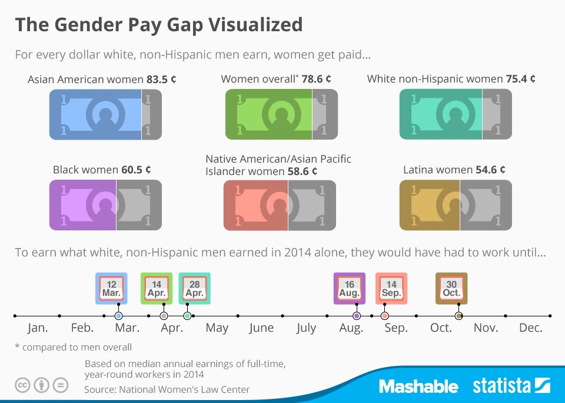
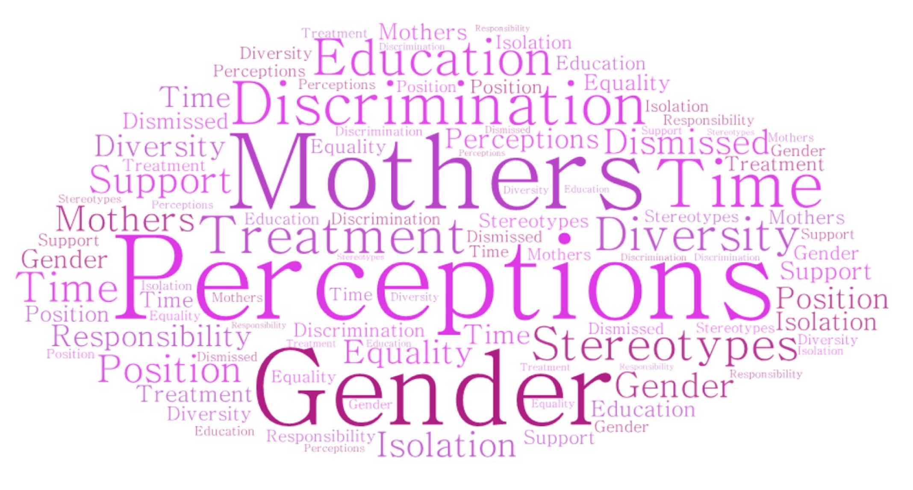
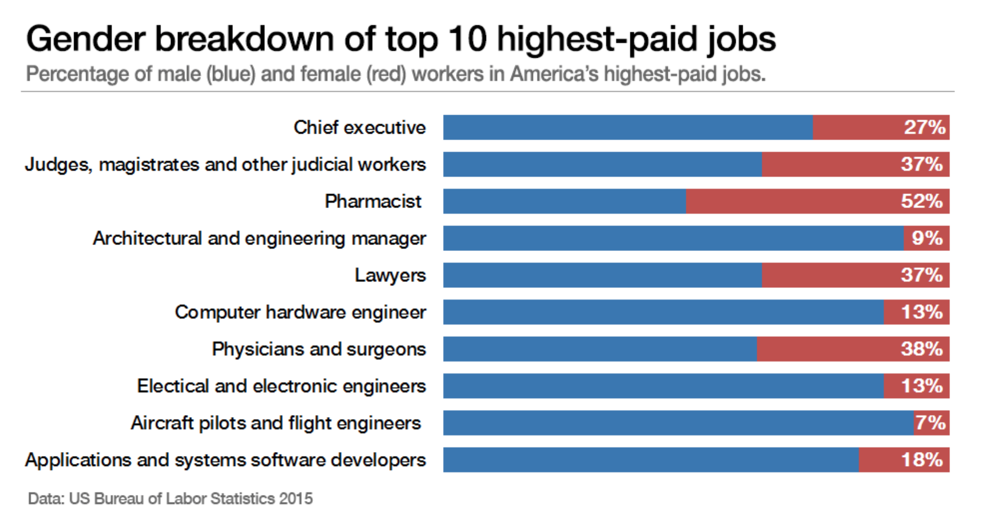

Case Study:PayScale App
Overview
The Need
This is a visual representation of the compensation that women of different races make compared to white men.
At the top of this graphic, we see color-coded dollar bills showing the equivalent amount earned for women of a particular race compared to the amount earned by white men.
At the bottom of this graphic is a color-coded calendar that correlates to the color-coded dollars above. This calendar is showing how far into the following year women of a particular race have to work in order to earn the equivalent of white men.
Why is this Happening?
Generative Research
Through my generative research, I found there are many large issues contributing to the gender wage gap including:
- Gender discrimination in the workplace.
- Jobs that are typically stereotyped as female or feminine tend to be devalued.
- Having a family makes women less attractive hires, while making men more attractive hires.
Women often don’t negotiate salaries for fear of being iced out in their jobs, leading to a widening year-over-year pay gap. Women are more likely to be hired for lower-paying jobs, while being vastly underrepresented in high-paying jobs.
For this project, I decided to focus on women negotiating their salary at the start of a new job, and negotiating for a promotion or raise.
Things to Consider
Even though women have increased their presence in higher-paying jobs traditionally dominated by men, such as professional and managerial positions, women as a whole continue to be overrepresented in lower-paying occupations.
Qualitative Research
For my evaluative research, I interviewed 5 women who work full-time, with an age-range of mid-30’s to early 50’s, some married with kids and some married without kids.
I wanted to dig deep into the issue and understand how their lives both at work and at home are impacted by the gender wage gap.
Some of my interview questions include:
Tell me what you know about how your salary rate was determined when you were hired.
What kind of support do you receive from leaders in the workplace?
Tell me about a time that you had to negotiate your salary.